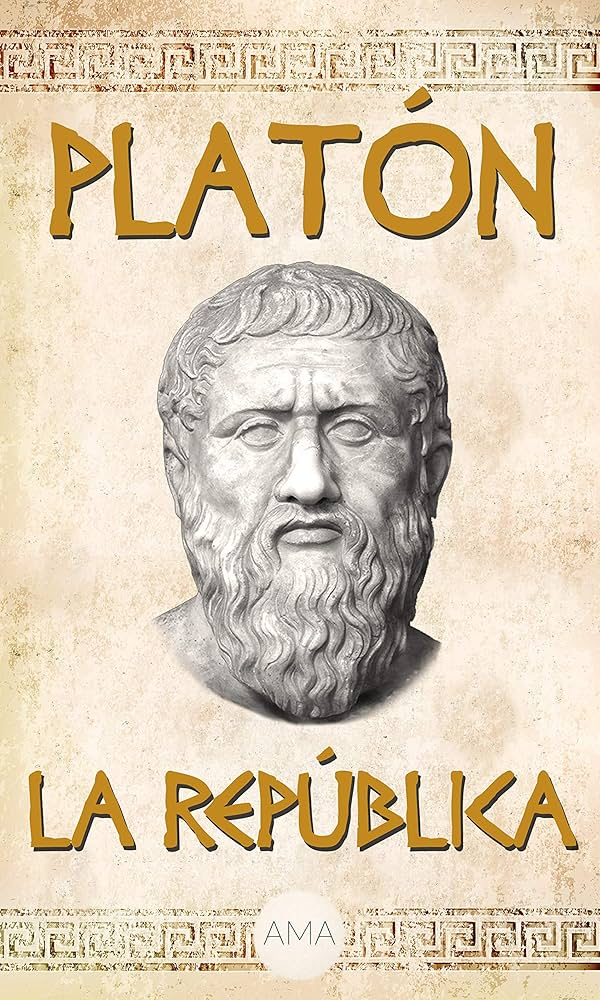

La República - Platón
"La República" es una de las obras más influyentes de Platón, presentando su visión de la justicia y la sociedad ideal. A través de diálogos, Platón explora temas como la naturaleza de la justicia, el Estado, la educación, la filosofía y el arte. Es fundamental para el estudio de la filosofía política y la teoría de las ideas.
Detalles del Libro
| Característica | Detalle |
|---|---|
| Autor | Platón |
| Género | Filosofía Política, Diálogo |
| Año de Publicación | Siglo IV a.C. (estimado) |
| Páginas | ~400 (depende de la edición) |
| ISBN | 978-XX-XXXX-XXX-Z |